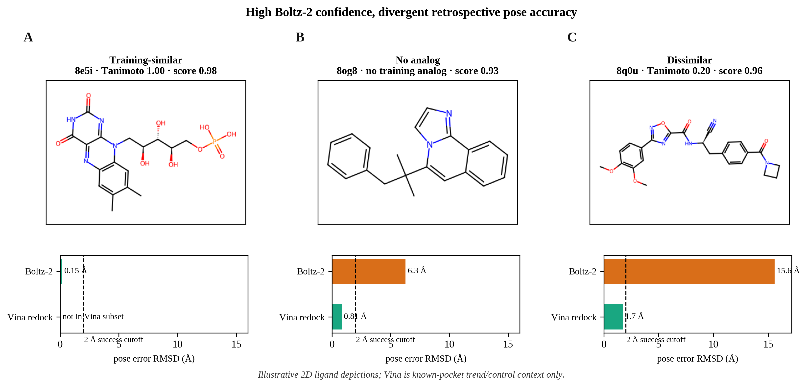

8e5i
training-similar · pose holds
FMN. Tanimoto 1.00. Boltz-2 score 0.98, ligand RMSD 0.15 Å versus the deposited pose. Not in the Vina subset.
ZF Lab · cofolding reliability · JCIM intended
The object is the deposited pose, the pocket, and the task — ligand RMSD versus interface DockQ versus affinity — not an ECE fold-change. Three audited complexes at similar Boltz-2 confidence give opposite poses.
Physical object
FMN. Tanimoto 1.00. Boltz-2 score 0.98, ligand RMSD 0.15 Å versus the deposited pose. Not in the Vina subset.
VM8. No training analog. Score 0.93 but RMSD 6.3 Å. Known-pocket Vina redock 0.8 Å (within 2 Å).
IKG. Tanimoto 0.20. Score 0.96 but RMSD 15.6 Å. Known-pocket Vina redock 1.7 Å.

Publication
Pick a route
Standalone JCIM abstract. No figure pointers. Calibration claim stays scoped to similarity bins, not a mixed ECE envelope.
Object gallery: pose (F1), pocket control (F5), pocket novelty (F8 A–C), task switch (F13). Spearman/AUROC panels labeled as controls.
No public GitHub. Analysis archive on Zenodo. Code on request.
Pre-publication stub plus the Zenodo software DOI. Article @article after acceptance.